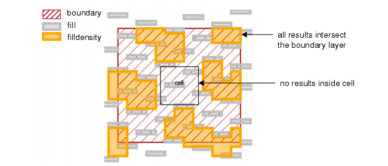
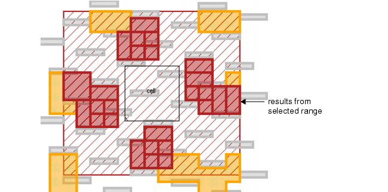

If you want to
exclude a placed cell from density checking, but you want to check
inside of a boundary layer at the same time, this procedure shows
an optimized method.
This procedure is a combination of the “Finding Density Outside of a Cell or Layer” and the “Finding Density Inside of a Layer” topics.
The Density operation
has an INSIDE OF LAYER option which could apply in this case, but
its performance can be slow in certain situations, so it is best
to avoid using that option.
One advantage to writing the Density operations
in the way shown in this section is you can have multiple Density
operations using differing constraints (but otherwise using the
same parameter values) and they will all run concurrently.
Procedure
- Write the following operation
to derive an exclusion layer where density is not performed:
keepout = EXTENT CELL "my_cell" ORIGINAL
- Write a Density check using
the derived layer from Step 1. You can write a check of the fill
layer inside the boundary layer, but outside the keepout layer,
as follows:
filldensity = DENSITY fill boundary keepout < d
[(AREA(fill)/(!!AREA(boundary)*!AREA(keepout)))/AREA()]
WINDOW w STEP s
RDB filldensity.rdb
filldensity { COPY filldensity }
The d, w, and s parameters
in this rule can be chosen for your process and set up as variables
in the rule file. These are interpretations of portions of the expression
The (AREA(fill)/(!!AREA(boundary)*!AREA(keepout)))
portion of the expression returns the area of the fill layer inside
the data capture window when the boundary layer is present but the
keepout layer is not. Division by 0 does not satisfy the constraint,
so any case where this occurs in the sub-expression is not output.
- Run DRC and view the results
for the filldensity layer. Results could be as follows:
Figure 1. Density Inside of
Boundary Layer and Outside a Cell
- Open the filldensity.rdb file
in Calibre RVE and sort the DA boundary column in descending order.
Scroll down until you see DA boundary values that are less than
99 percent of the maximum DA value.
The 99 percent cutoff point
is arbitrary, but is useful when you want to show only the result
windows that are inside the boundary layer.
- Highlight all results where
DA boundary is at least 99 percent of the maximum DA value. (You
can Shift+click a range of rows in the Calibre RVE results table.)
Results could be as follows:
Figure 2. Windows Inside Boundary
Layer
Compare this with Figure 1. These are the windows inside the boundary
layer that fail.
Results
You can adjust the Density constraint,
WINDOW, and STEP values and view them using similar techniques shown
in this section. Using these methods, you can optimize your results presentation.